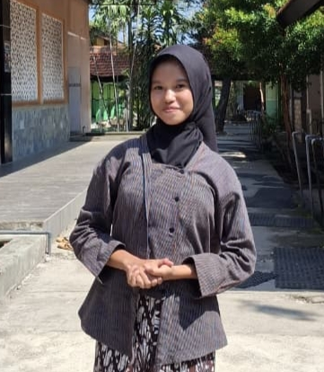
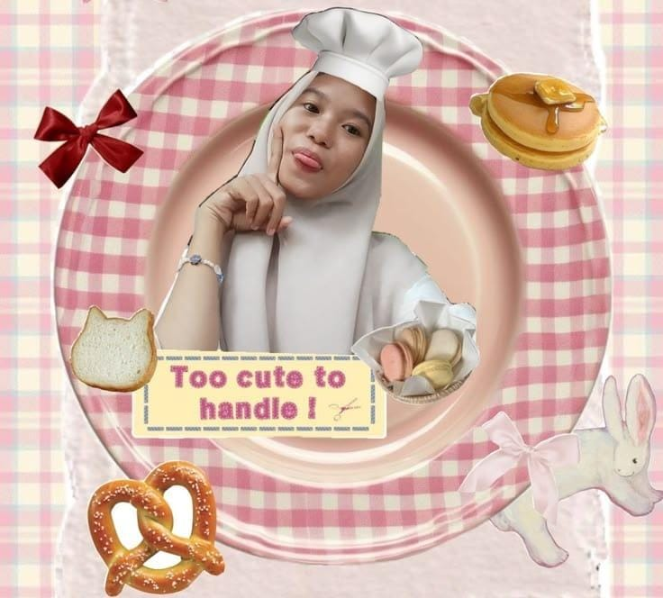
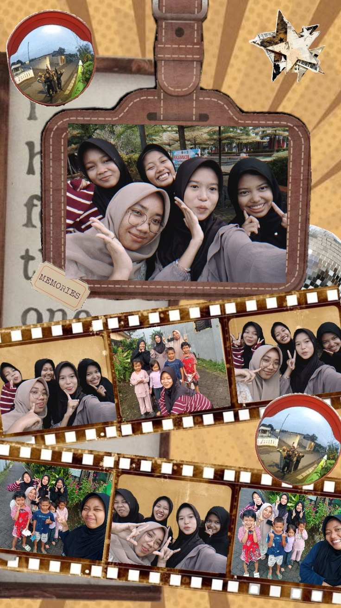

Salah satu remaja yang suka mencoba hal baru
Selamat Datang di Portofolio Saya!! Disini saya akan berbagi tentang sedikit diri saya, hobi, dan beberapa karya yang sudah saya buat.. Semoga kalian suka dengan hasilnya yaaa...
Haiii Semuaa!! Perkenalkan Nama saya PUTRI YULIANA MAYZAHRA, Saya biasa dipanggil orang-orang dengan sebutan "PUTRI", Salam Kenal Semuaa.. Saya adalah salah satu seseorang pelajar SMK Negeri 1 Nganjuk yang mengambil salah satu konsentrasi keahlian PENGEMBANGAN GIM. Saya salah satu Remaja yang sangat menyukai mencoba hal-hal baru. Saya sekarang sedang mencoba mengedit foto-foto yang terlihat biasa menjadi lebih aesthetic dengan menambah sedikit hiasan.
| Nama Lengkap | : Putri Yuliana Mayzahra |
| Tempat Tanggal Lahir | : Nganjuk, 01 MEI 2009 |
| Alamat | : Jl. Letjend Suprapto IB, Ploso Bonggah , Nganjuk |
| Status | : Siswi Pelajar SMK Negeri 1 Nganjuk |
Hobi saya adalah suka mengabadikan momen momen yang saya lakukan dan Saya senang mengedit momen tersebut menjadi sesuatu yang menarik secara visual.

Foto tersebut merupakan hasil editan pertama saya yang menggunakan aplikasi pinterest. Saya mengubah foto yang semula terlihat biasa menjadi lebih aesthetic dengan menambahkan hiasan seperti aneka Kue-Kue.

Foto tersebut merupakan hasil editan kedua saya yang juga menggunakan aplikasi pinterest. Saya mengubah foto-foto bersama teman saya yang semula terpisah dan terlihat biasa menjadi berkolase dan lebih aesthetic dengan menambahkan sedikit hiasan.
Tertarik untuk berkolaborasi atau sekadar say hello? Hubungi saya di bawah ini.